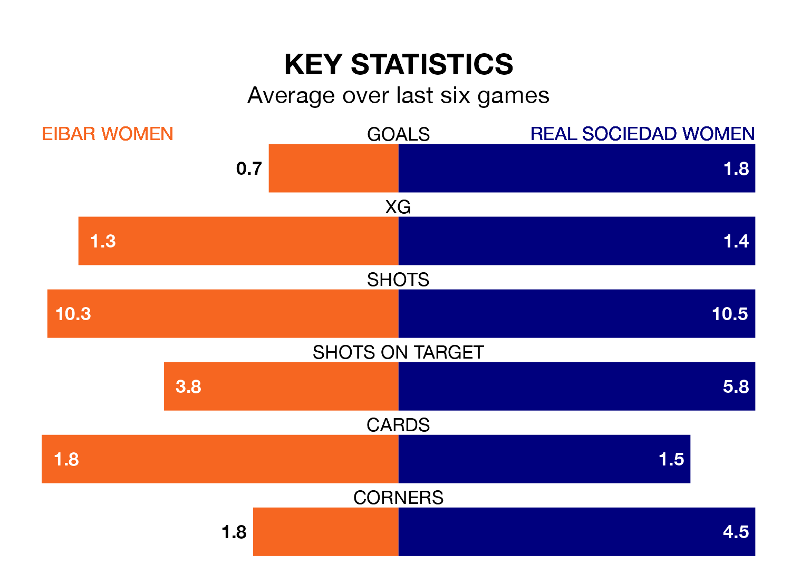

Real Sociedad Women are strong favourites to take all three points despite Eibar Women's home advantage in Sunday's early match at Instalaciones de Unbe.
*Betting Company* are offering odds of 1.7 on Sociedad Women sealing the win, with the visitors sitting seventh in Primera Division Women table.
Eibar, who are 12th in the league and nine points behind Sociedad Women, are priced at 4.2 to win. A draw is set at 3.85.
In Synne Jensen, Sociedad Women have one of the league's sharpest shooters so far this season. She has notched 10 goals in 15 appearances, to sit third in the scoring charts.
Her goal rate of one every 112 minutes is much quicker than that of Andrea Abigail Alvarez Donis, Eibar's top scorer with a goal every 227 minutes, and a total of three goals in 13 games.
With 10 goals in 15 games so far this season, the home side are the league's second-lowest scorers with 0.7 goals per game. And they are conceding more than average, letting in 32 goals at a rate of 2.1 per game.
The visitors are also below average scorers, with 1.5 goals per game, compared to a league average of 1.6. They have conceded 1.7 goals per game.
Eibar are in disappointing form in Primera Division Women, with two wins and four losses from their last six games.
With three wins and three draws over that period, Sociedad Women's form is much better – they have taken 12 points from 18, compared to Eibar's six.
In the last five years, Eibar and Sociedad Women have played each other on five occasions. Eibar won one of them, Sociedad Women three, and they drew once.
On average, Eibar scored 1.4 goals and Sociedad Women 2.0 in those matches.
Their last meeting was on October 14, when Sociedad Women won 3-1 at home.
Eibar's last match was on Sunday, a 3-0 loss against Sevilla Women.
Sociedad Women drew 1-1 with Madrid CFF last time out, also on Sunday, with Jensen on the scoresheet.
Updated: 14:12 (UTC), 02/02/24